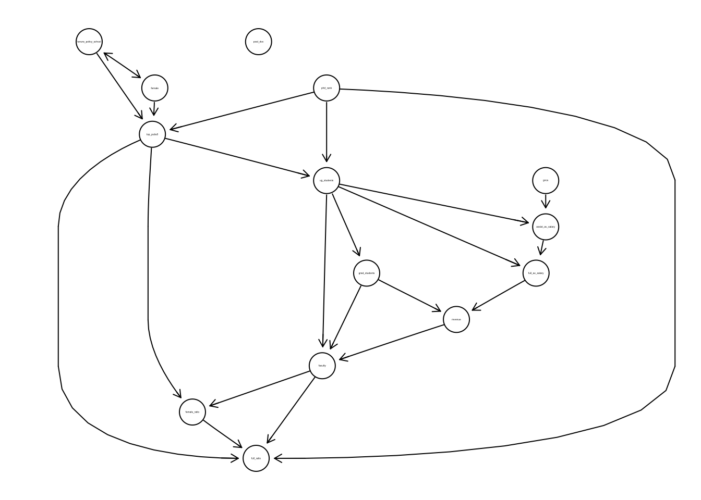

Causal Discovery with pcalg
The pcalg package (pronounced “PC alg”, short for “PC algorithm”) allows us to perform casual discovery in R. The cornerstone causal discovery algorithm that we learned was the SGS algorithm. The PC algorithm (also named after its authors) uses the same ideas as SGS but performs the conditional independence tests in a better order for faster computation.
The pcalg package depends on the graph, RBGL, and Rgraphviz pacakges which are available through the Bioconductor repository rather than CRAN (install.packages() won’t work for those two.) Visit the Bioconductor pages for these packages for the installation commands.
library(dplyr)
library(pcalg)##
## Attaching package: 'pcalg'## The following object is masked from 'package:dagitty':
##
## randomDAGtenure <- readr::read_csv("../../data/aer_primarysample.csv")##
## ── Column specification ───────────────────────────────────────────────────────────────────────────────────────────
## cols(
## .default = col_double()
## )
## ℹ Use `spec()` for the full column specifications.tenure <- tenure %>%
select(gncs, top_pubs5, tenure_policy_school, female, phd_rank, post_doc, ug_students, grad_students, faculty, full_av_salary, assist_av_salary, revenue, female_ratio, full_ratio)suff_stat <- list(C = cor(tenure), n = nrow(tenure))
pc_tenure <- pc(suff_stat, indepTest = gaussCItest, labels = colnames(tenure), alpha = 0.01, skel.method = "stable.fast")
plot(pc_tenure, main = "")## Loading required namespace: Rgraphviz